Ruby Conference 2007 レポート
書いた人:はたけやま、かくたに
はじめに
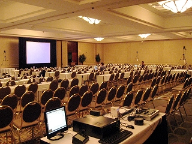 11/2 から11/4 にかけて、アメリカはノースカロライナ州シャーロットにて Ruby Conference 2007 が開催されました。
今年から会場が大きくなり午後のセッションは 3 つの部屋に別れるマルチトラック構成になりました。また、参加者も去年の 300 人から倍近い 500 人と大幅に増えました。
本稿では RubyConf 2007 の様子を主にミーハー的な視点からレポートします。
RubyConf 2007 について
: 
- 開催日
- 2007 年 11 月 2 日 (金) 〜 4 日 (日)
- 開催場所
- Omni Charlotte Hotel, North Carolina, USA
- 開催母体
- Ruby Central
- 中心スタッフ
- David Alan Black and Chad Fowler
- 参加者
- 500 人くらい。日本人の参加者は 11 名。
- 写真
- もっと写真を見たい方は flickr にたくさん有ります。
- 動画
- Ruby Conf 2007 - Confreaks
一日目 (11/2)
午前
What makes code beautiful? (Marcel Molina Jr.)
: 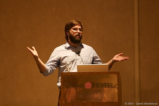
Ruby on Rails のコアメンバーである Marcel Molina Jr. が、コードの美しさとその効用、そしてなぜ Ruby だと美しいコードが書けるのかについて発表しました。
美しさの定義として
- Proportion (適切なコードの粒度／見た目の良さ)
- Integrity (適切な場所へのメソッドの定義)
- Clarity (コードの明確さ)
の 3 つをあげ、これらをバランスよく適用することで美しいコード＝良いソフトウェアとなる。
Ruby は美しいコード書けるように最適化されており、良いコードを書くと自然と美しいコードができあがる、美しくないコードは設計が悪いのかもと気付かせてくれる、といったことを話していました。
RubyConf 2007 の最初の発表にふさわしい、すばらしい発表でした。
また、Kent Beck 好きの私としては、Smalltalk Best Practice Patterns を推薦していたのが印象的でした。(この項:はたけやま)
Advanced Ruby Class Design (Jim Weirich)
: 
Jim Weirich が Ruby のメタプログラミング機構を活用したクラス設計を紹介しました。
サンプルプログラムを題材にモリモリとメタプログラミングテクニックを披露していくのですが、そのあまりのメタっぷりに会場からどよめきが起きていました。
また、Jim は Java の箱から抜け出すこと(＝ Ruby のメタプログラミングを活用すること）の重要性を訴えました。
Ruby メタプログラマの道具箱を見せてもらったようで、非常に為になる発表でした。(この項:はたけやま)
Room1
午後からは 3 つの部屋に分かれて、それぞれの部屋でセッションが行われます。
Why Camping Matters (Nathaniel Talbott)
: 
RubyConf の先輩参加者たちによれば Nathaniel の発表はいずれも難解だと聞いていて不安でしたが、 今年の発表は _why プロダクツである Camping を、ライブコーディングを混じえながら紹介しつつ、Rails と対比するという内容で、RubyConf 初心者でも楽しめる内容でした。
セッションでは Rails と Camping のいずれもが Ruby による Web アプリケーションフレームワークでありながらも、 対照的なものに仕上がっていることに触れ、Rails は Professional や Pragmatist 向けだが、Camping は Hobbyist や Hacker 向けであり、 Rails に比べればマイナーかもしれないが、Camping は Hack であり、Hack こそ Ruby の価値だと情熱的に主張していました。
「Ruby を使って楽しむことの大切さ」を再確認するようなセッションでした。Go hack something!
Nathaniel がライブコーディングについて、(私の理解が正しければ) 「 20 分の内容で 50 分しゃべるのに最適なんだ」と軽口を飛ばしていたのが印象的でした。 今度プレゼンテーションの機会があったら、是非まねしてみようと思います。(この項:かくたに)
Introduction to AP4R - Asynchronous Processing for Ruby (Shunichi Shinohara and Kiwamu Kato)
: 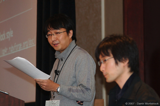
RubyKaigi 2007 では MDD (マスコット駆動開発)旋風を巻き起した AP4R guys のお二人による発表。
ネタは控えめに、非同期メッセージングライブラリとしての AP4R をアピールしていました。
セッション終盤での質疑応答でも活発に質問が飛び交っていたので、海外の Rubyist も AP4R に興味をもってもらえたようでした。
詳しくは、発表されたご本人たちのエントリがよくまとまっているので、そちらをご覧ください。(この項:かくたに)
Room1 のその他のセッション
私たちは参加しませんでしたが、Room1 ではその後、以下の発表が行われました。
- Treetop: Bringing the Elegance of Ruby to Syntactic Analysis (Nathan Sobo)
- Avoiding Pitfalls in C Extensions (Paul Brannan)
Room2
3 つに別れた部屋のなかでは Room2 が最も狭いのに、この部屋で人気セッションが決行されたりして、ちょっと大変なこともありました。
Controlling Electronics with Ruby (Ben Bleything)
: 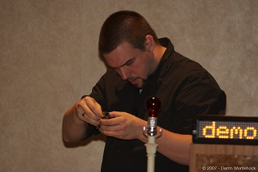
Ben Bleything は、さまざまな電子機器を Ruby から操作する方法を紹介しました。発表の最後にそれまで紹介した電子機器を組み合わせて「XFD (ビルドがこけた時にランプの点灯で通知してくれる装置)」を作成するデモを行いました。
電子機器のプログラム経験に疎い私にとって難しい発表ではありましたが、Ruby を使ってランプ点灯や電光掲示板を制御を行うデモは、見ていてとても楽しいものでした。私もいつか Ruby でランプをピコピコさせてみたいです。(この項:はたけやま)
- 発表内容のblog
- http://blog.bleything.net/2007/11/17/rubyconf-stuff
- 動画
- http://rubyconf2007.confreaks.com/d1t2p1_ruby_and_electronics.html
High Art on Top of Low-Level APIs: Building Games with Ruby (Andrea O.K. Wright)
: 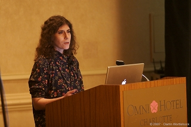
Andrea O.K. Wright が、Ruby/SDL、RUDL、gosu、OGRE.RB など、さまざまな Ruby のゲーム用ライブラリを紹介しました。
薄幸そうな少女がロゴのゲームライブラリ gosu を高橋会長がしきりに褒めていたのが印象的でした。
Andrea さんは 7 年にわたる RubyConf の歴史の中で、初めての女性発表者だそうです。(この項:はたけやま)
- 資料(PDF)
- http://www.chariotsolutions.com/slides/pdfs/building_games_with_ruby_slides.pdf
- 動画
- http://rubyconf2007.confreaks.com/d1t2p2_building_games_with_ruby.html
Ropes: An Alternative to Ruby’s Strings (Eric Ivancich)
: 
Eric Ivancich 氏が、データ構造 Rope とその Ruby での実装について発表しました。すごい String (ひも)なので Rope (縄)というのが面白いですね。
Rope は String と比較して、
- 文字列の結合が速い
- 部分文字列の切り出しが速い
といったメリットがあるそうです。
発表の当日にバージョン 0.1 が RubyForge へアップされました。(この項:はたけやま)
Hurting Code for Fun and Profit (Ryan Davis)
: 
Ryan Davis が、良い開発スタイルを促進させる考え方とツールを紹介しました。
- Introspection Oriented Development
- もっとわかりやすいコードにできないか、とか
- コンスタントに自分に問いただす
- Self Improvement
- ニコニコ動画や、はてブのホッテントリばかりを見ていないで、本を読め。http://c2.com/ を読め
- 技術以外のことにも興味を持て
- 良いツール
- autotest
- Flog
- メトリクス計測ツール
- Heckle
- テストが正しく失敗することをテストするツール
- 自分の書いたコードを愛そう。もしそれができないようなら、そのコードを、リファクタリングや、不要なコードを削除を行うことでボッコボコにしてやろう
Ryan 自身の経験した、ダメダメな上にだれも利用していない WebDAV 対応のコードを休日出勤して削除したら、シンプルになった上に IntegrationTest のスピードが 14 倍になってみんなハッピーになった、というエピソードが非常に印象的でした。(この項:はたけやま)
Room3
Ruby Clinic が行われましたが、私たちは参加しませんでした。
Evening
Town Meeting with Ruby Creator (Matz)
: 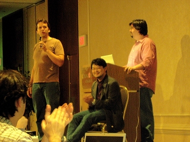
晩御飯のあと、プロ Rubyist 達が Matz へ疑問をぶつけるタウンミーティングが開催されました。
英語の苦手な私は開始早々においてけぼり。セッションの内容は、mput の日記 をご覧ください。
Confreaks.com で動画も公開されています。(この項:はたけやま)
- Ruby Town Meeting by Yukihiro Matsumoto - mput の日記。
- Town Meeting with Matz at RubyConf 2007 - Talk Like A Duck
- Town Meeting with Ruby Creator - Confreaks.com
二日目 (11/3)
午前
2 日目も午前中はみんな一緒に話を聞きます。今日は Ruby 実装者祭りです。ささださんの姿は壇上には見えませんでしたが、誰もが ko1 を意識しているようでした。圧倒的な存在感 :-)
午前は以下のセッションが行われました。
State of IronRuby (John Lam)
: 
.NET 上で動く、C# で実装された IronRuby の紹介だったと思います。
早口すぎて私たちは完全に置いてけぼりでした。John Lam のお尻からなぜか FreeBSD のデーモン君みたいな尻尾が出ていたこと以外に書けることはありません。 私たちも会場でリロードしまくっていた mput の日記をご覧ください。
セッション終了後に id:secondlife が目をキラキラさせて「 IronRuby イイ!」と言っていたので、たぶん良かったのだと思います。(この項:かくたに)
JRuby: Ruby for the JVM (Charlie Nutter, Tomohas Enebo)
: 
RubyKaigi 2007 でも発表してくれた JRuby guys のセッションです。
発表の内容は、JRuby の設計や実装についての突っ込んだ話題が中心でした。 なので、詳細は発表資料をご覧ください :-)
次のバージョンである JRuby 1.1 ではさまざまなパフォーマンス改善の結果、MRI(Matz’s Ruby Implementation: CRuby 1.8.x)よりも速くなったというデモで会場をどよめかせつつ、 「でも YARV はもっと速い」と、最後はささださんに華をもたせる粋な演出が印象に残りました。
他にも、なぜか ‘『Java Expert #2』’の表紙をスライド資料に使ったり、発表前に「RubyKaigi ではこうやってたよ」と IRC の画面をスクリーンに大写しにしたり、と日本への目配せが随所に見られる発表でした。(この項:かくたに)
Rubinius 1.0 (Evan Phoenix)
: 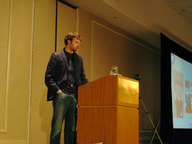
Even Phoenix から Ruby による世界制覇の状況が語られました。「世界制覇」というと私には RubyKaigi 2006 でのまつもとさんの基調講演が思い起こされます。 まつもとさんに確認してみたところ「このネタを海外でやった覚えはない」とのこと。示し合わせたわけではないのにメッセージが呼応しているのがより一層興味深いです。
Rubinius について私は「Ruby で Ruby を実装している」という以上のことを知らずにいたのですが、今回の RubyConf2007 参加でその考えを改めることになりました。
Evan のプレゼンスタイル(今どきな感じです)もさることながら:
- Ruby 1.8/1.9 は C プログラマのための Ruby
- JRuby は Java プログラマのための Ruby
- IronRuby はC# プログラマのための Ruby
――そして、Rubinius は Ruby プログラマのための Ruby 。といったアオリも小気味よく、プロジェクトの勢い(公式ワイフや公式マスコット (!) も完備)を感じさせるセッションでした。
まつもとさんやささださんに、後から Rubinius について聞いてみたところ「Rubinius は脅威だ。Ruby よりもコミッタが多い :-)」といったコメントが得られました。
といっても Rubinius の勢いが感じられるのはネタやトークだけではありませんでした。Rubinius のテストケースは minispec.rb を使って書かれています。minispec.rb は RSpec のミニマムセットのような小さなライブラリ(といっても 1 ファイルの短いもの)です。Rubinius のテストケースは「動作する Ruby の仕様をボトムアップで表現したもの」として、他の Ruby 実装者にとっても重宝しているようでした。実際に、IronRuby や JRuby の発表でも「Ruby 実装としての完成度」を測定する基準として使われていました。(この項:かくたに)
- 発表資料(PDFなど)
- http://www.slideshare.net/evanphx/rubyconf-2007-rubinius-10/
- 動画
- http://rubyconf2007.confreaks.com/d2t1p3_rubinius.html
Room1
午後はまた 3 つの部屋に別れてのマルチトラックです。Room1 での発表は以下の通りです。
Profiling and Tuning Ruby 1.8 (Edward Borasky)
プログラマ歴 45 年( ! ) の Edward Borasky 氏が、Ruby のプロファイリングとチューニングについて発表しました。
Ruby とその他の言語 (Java, Perl, YARV !, Python, PHP, Groovy !) の性能を比較し、やはり Ruby は遅いよねとの結論。で、チューニングするためにはこんなやり方をすればいいんじゃない、というお話だったと思います。
個人的には、Rails アプリのベンチマークとして紹介されていた「Pet Store (A Rails benchmark from ThoughtWorks)」の存在を知れてよかったです。(この項:はたけやま)
svn co http://tw-commons.rubyforge.org/svn/petstore/trunk petstore- 発表資料 (PDF)
- http://rubyforge.org/docman/view.php/977/2705/Slides.pdf
- 動画
- http://rubyconf2007.confreaks.com/d2t1p4_profiling_and_tuning_ruby.html
Tightening the Feedback Loop (Phil Hagelberg)
: 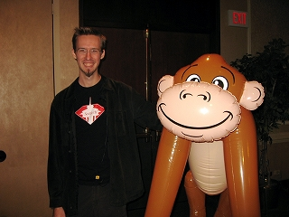
Seattle.rb の Phil Hagelberg が、でかいサルのぬいぐるみを連れて登壇。フィードバックループを短くするためのツールを紹介しました。
- Accuracy (コードの正しさ): testunit/rspec
- Meta-Accuracy (テストの正しさ、カバレッジ): Heckle, rcov, caveat
- Maintainability: Flog (メトリクス計測)
- Performance: よく分からなかった
そして、これら複数のツールからのフィードバックをエディタ上ですばやく受けるために Phil が作ったツール Augment が登場。 今のところ対応エディタは Emacs と Textmate のみですが、フロントエンドを書くことにより他のエディタでも対応できるそうです。(この項:はたけやま)
- blog
- http://technomancy.us/
- Augment
- http://augment.rubyforge.org/
- 動画
- http://rubyconf2007.confreaks.com/d2t1p5_tightening_the_feedback_loop.html
Maximizing Productivity (Eric Hodel)
: 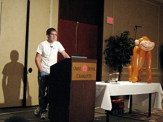
またまた Seattle.rb の Eric Hodel が、良いソフトウェアを開発するための Tips and Tricks を紹介しました。
一番大事なことは「楽しむこと (Have fun)」。そしてそのために以下のことを実践するといいんじゃない、とのことでした。
この発表は非常に参考になることの多い良い発表でした。(この項:はたけやま)
Conversations vs. Laws (Francis Hwang)
超高速スピーチの Francis Hwang 氏が登壇。うあー、何の話かさっぱりわからない。
mput の日記にも見放されたボクらにできることはただ画面をボーっと眺めることだけでした。(この項:はたけやま)
Room2
Room2 での発表は以下の通りです。
Essential Incompleteness in Program Modeling (Luke Kanies)
: 
UNIX 系 OS のシステム管理の自動化ツールである Puppet の開発者である Luke Kanies の発表です。プログラムモデルにおける不完全性について ―― 数学や科学の知見のソフトウェア設計への適用を Puppet を題材に話をしてもらえると理解(あるいは勘違いして)聞きにいったのですが、Puppet そのもの話はほとんどありませんでした (!)
まとめると「完全なモデルなんてなくてフィードバックを重視しながら設計を emerge させていく、ってアジャイル開発っぽいけど、アジャイルよりもゲーデルとかラマチャンドランといったほうが cool じゃね？」という感じでした。つまり「‘『GEB』’最高!みんなも読むといいと思うよ」と。発表を聞いていた私はかつて Jim Highsmith の‘『適応型ソフトウェア開発』’のことを思い出しました(本書はカオスの縁で成功するためのプロジェクトマネジメントの本です)。
セッション終了後、高橋会長から「どうでした？」と聞かれたので「‘『GEB』’を語る会でした。実は最後まで読んでないし、このテの話を英語でされるのはキツい」と伝えたところ「ええっ？！ 読んでないんですか？！」と切り返されました。帰国後に本棚の奥の方から『 GEB 』を発掘したので、今度こそ読み通したいと思います(あとで読む)。(この項:かくたに)
- 資料(PDF)
- http://reductivelabs.com/downloads/presentations/Essential_Incompleteness_in_Program_Modeling.pdf
- 動画
- http://rubyconf2007.confreaks.com/d2t2p1_incompleteness.html
Mac OS X Loves Ruby (Laurent Sansonetti)
: 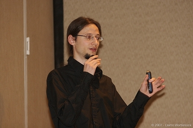
Apple Inc. 勤務の Ruby Ninja、Laurent による RubyCocoa プロジェクトの現状報告と今後の ロードマップ 世界制覇プランの発表です。Laurent は Evan Phoenix の発表の内容を受けて、直前に「ロードマップ」から「世界制覇プラン」に修正したのを id:ogijun が目撃したそうです。 Ruby による世界制覇の手は Apple Inc. にも忍びよっています。
発表で紹介されたのは Leopard に搭載されることになった RubyCocoa 1.0(= 0.12.0 + α) での改善点や、BridgeSupport、DTrace 対応といった新機能、Cocoa プロセスにアタッチできる RubyInject などです。いずれもデモを中心に紹介されました。披露されたデモでは、QuartzCompozer を使ったり、テキストを読みあげたり、LimeChat for OSX に DTrace をかけた結果を Instruments.app で可視化したりと、いかにも Mac らしい、モテそうなものが多かったです。
今後の ロードマップ 世界制覇プランとして、Ruby 1.9 のネイティブスレッドへの対応や、Objective-C のランタイム上に Ruby のクラスモデルをつくりたい、といった野心的な取り組みが発表されました(具体的な作戦などはいま考えているところだそうです)。
Ruby が標準サポートされている OS としての Mac OS X に期待したくなる発表でした。現状の Leopard に標準搭載されている irb で日本語を入力できない不具合があるらしいですが、長い目で温かく見守ろうと思いました。(この項:かくたに)
- 参考(Leopard 解体新書 – 第 3 回:ブリッジサポート - RubyCocoaの秘密)
- http://japan.zdnet.com/sp/feature/07leopard/story/0,3800081890,20360382,00.htm
- 動画
- http://rubyconf2007.confreaks.com/d2t2p4_osx_loves_ruby.html
Room2 のその他のセッション
Room2 では以下の発表も行われました。
- Writing Client and Desktop Applications in Ruby (Bruce Williams)
- Efficient Ruby to Javascript Compilation and Applications (Michael Neumann)
Room3
Refactotum というワークショップが行われましたが、私たちは参加しませんでした。資料を見るかぎりだと、オープンソースプロジェクトのコードをリファクタリングしてパッチを投げる、という実践的な内容だったようです。資料によればこのネタで既に 4 回もセッションをやっていたのですね。これは面白そう。(この項:かくたに)
Evening
Keynote Address (Matz)
二日目の夜は、まつもとさんによるキーノートスピーチ。
まつもとさんは、なぜ Ruby が素晴らしいのか、Ruby1.9 の新機能と YARV について、そして Ruby の将来について語りました。
スピーチの中の
Ruby が素晴らしいのは、Ruby を使っているユーザがすばらしいから。Ruby を盛り上げてくれてありがとう
: 
のくだりでは、会場中の全 Rubyist が泣きました。(この項:はたけやま)
- 発表資料
- http://www.rubyist.net/~matz/slides/rc2007/index.html
- 動画
- http://rubyconf2007.confreaks.com/d2t1p8_keynote.html
4th Annual RejectConf 2007
: 
「当初は三日目の 15:00 から実施する」とアナウンスされていた RejectConf でしたが、唐突にまつもとさんの Keynote 終了後の Room3 で開催されることになりました。
結果的に突然の開催告知となったので仕方がないことではありますが、発表は準備不足だったり、以前の発表内容の使い回しだったりすることが多かったです。また、いつ終わるとも知れないグダグダ感(次から次へと「発表したい!」という人が出てくる)が、一日じゅう英語の発表を聞き続けた私にはツライものがありました。終わってみれば 20 名ほどの発表があったようです。 Confreaks が動画を公開してくれているので、詳しくはそちらを参考にしてください。
個人的には、監視ツールの GOD (すごい名前だ……)と、JRuby の Charles Nutter による、 Ruby の仕様を表現するテストケースの充実を呼びかけるアナウンスが印象に残っています。(この項:かくたに)
三日目(11/4)
午前
いよいよ最終日です。例によって午前中はみんな一緒です。
Use Ruby to Generate More Ruby - RubiGen is Everywhere (Dr Nic Williams)
: 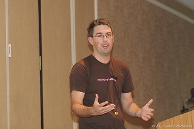
Dr Nic が Rubigen を紹介しました。
Rubigen とは、Rails の generator を利用して Rails 以外のアプリも生成しようというものです。発表では Merb, RubyCocoa, AdobeAIR の自動生成が行われました。
また、プレゼン資料内の特攻野郎 A チームネタに会場が大爆笑でした。A チームネタは万国共通なのですね。(この項:はたけやま)
- 動画
- http://rubyconf2007.confreaks.com/d3t1p1_rubigen.html
- セッション冒頭の特攻野郎 A チーム MAD動画(ニコニコ動画)
- http://www.nicovideo.jp/watch/sm1456037
- セッション冒頭の特攻野郎 A チーム MAD動画(YouTube)
- http://drnicwilliams.com/2007/10/25/dr-nic-at-rubyconf-2007-rubigen-teaser/
Behaviour Driven Development with RSpec (David Chelimsky, Dave Astels)
: 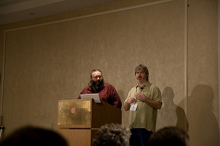
振舞駆動開発 ( Behaviour Driven Development:BDD ) の提唱者である Dave Astels と、現在の RSpec プロジェクトの実質的なリーダーである David Chelimsky のペアによる発表です(ちょっとだけペアプログラミングも披露されました!)。
それにしても Ruby 界隈には Dave / David が多いですね。ちなみに、David Chelimsky は「チェリムスキー」と発音しているように聞こえました。
発表では、BDD という考え方のバックグラウンドと RSpec の紹介に続いて、RSpec プロジェクトの歴史と次リリースでの新機能がデモを中心に披露されました。
RSpec の新機能の数々は、 rbehave を RSpec に統合した結果として生まれた StoryRunner という仕組みを中心に形成されています。 StoryRunner とは「英語っぽく書いたら、それがそのまま受入テストケースとして動く」というもので、テスティング DSL としての方向性を追求した結果、辿り着いてしまった境地ともいえます。
- 会場ではこの StoryRunner のデモはかなり好評でしたが、私たち日本人にとっては「英語が日常語の人はいいですね」といった趣の機能でもあります。なので、もう少し適用の作戦を考えたり実践したり、 StoryRunner については仕様や実装が落ち着いてから、るびまの連載でも言及したいなあと思っています。経験から学んだこととして、RSpec での新鮮な機能は変更スピードも速く、まとめて紹介するには不向きだということもありますし)
- 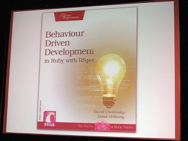
新機能紹介の後には、RSpec コミュニティについて語られたあと、Pragmatic Bookshelf の近刊として “Behaviour Driven Development in Ruby with RSpec” の出版がアナウンスされました(出版時期は未定のようで、 Pragmatic Bookshelf のサイトにもまだ掲載されていません)。出版が待ち遠しいです。
今回の発表でもコミュニティのことに言及していたことが印象に残りました。私は少しだけ RSpec コミュニティに出入りしていて、その経験から「 RSpec チームは利用者や開発者を大事にしている」という印象を持っていたのですが、そのことに確信を持てたので、これからも RSpec をウォッチしていこうと改めて思いました。(この項:かくたに)
- 資料(PDF)
- http://blog.davidchelimsky.net/files/BDDWithRspec.RubyConf.2007.pdf
- 動画
- http://rubyconf2007.confreaks.com/d3t1p2_rspec.html
Next-Gen VoIP Development with Ruby and Adhearsion (Jay Phillips)
: 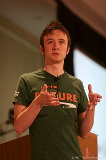
Jay Phillips が テレフォニーアプリケーションフレームワーク Adhearsion を紹介しました。
Adhearsion と同様にテレフォニーアプリを作成する環境として Asterisk がありますが、Jay は Asterisk での開発はダメダメだと一蹴。Asterisk と比べた Adhearsion のメリットを説明していたみたいです。
正直なところ Adhearsion の良さがよく分からなかったのですが、発表の最後に行ったテレコムアプリケーションのデモはおもしろそうでした。(この項:はたけやま)
Room1
例によって 3 つの部屋に別れます。
Enhancing Embedded Development with Ruby (William Bereza)
William Bereza 氏が、組込みシステム開発のサポートに Ruby を利用した事例を紹介しました。
主にテストのサポートツールとして Ruby を利用したとのこと。具体的には以下のとおり。
- テスト用の DSL を構築（ C extension を利用して実際のシステムを呼び出す）
- C のコードをパースして、テスト用のモックを自動生成
- rake test:system で全テストを実行
一見地味ではありますが、堅実な Ruby の利用事例だという印象を受けました。(この項:はたけやま)
- 発表資料(PDF)
- http://atomicobject.com/files/enhancing_embedded.pdf
- 動画
- http://rubyconf2007.confreaks.com/d3t1p4_embedded_development_with_ruby.html
JRuby in the Wild (Kyle Maxwell)
Kyle Maxwell が CastTV 社への JRuby の導入について発表しました。
Kyle が Ruby でなく JRuby を選択した理由は、既存の Java ライブラリを利用したかったから。Ruby で C extension 等を使えば同様の処理の実現はできたが、JRuby の方がより簡単だったとのこと。
また、JRuby と Ruby をベンチマーク比較していましたが、ちょっとビミョウなベンチマークという印象。コードの書き方を工夫するだけでどうとでも操作できそうな。(この項:はたけやま)
Cleanliness Is Next to Domain Specificity (Ben Scofield)
: 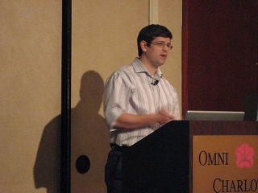
Ben Scofield が Domain Specific Language について発表しました。
まず最初は DSL の定義の話。Language とは Vocabulary と Grammar から成る。Ruby を使って Domain Specific Language を作ると言うが、Ruby を使っている限りはどの DSL も Vocabulary が違うだけで Grammar は同じはず。なのでそれは Domain Specific Dialect (方言)と呼ぶべきじゃないか、という話。言葉遊び？
次に DSL を作るときの話。以下のステップで作るといい DSL が作れるんじゃない、という話でした。
- Start Modestly
- Stay in the Domain
- Get Better
DSL と聞いてかなり期待していたのですが、目新しい話がほとんどなくちょっと拍子抜けな発表でした。(この項:はたけやま)
Room2
3 つの部屋のうちで最も狭かった Room2 とも今日でお別れです。
Ruby and Identity: OpenID、CAS and Information Card (Justin Gehtland)
: 
OpenID への関心はこちらでも高いようで、あまり広くない会場にたくさんの人が入っていました。
中央集権的には認証には private なものと public なものの 2 種類があり、private なものはエンタープライズなイントラか、WAN に置くもので CAS がそれに該当し、一方の public なものは アプリ側で opt in する OpenID がある、という比較の後は、OpenID を中心に、認証処理のシーケンスの説明や、Ruby での実装 (restful_open_id_authenticated だったかな？) のことが説明されていました。聴衆からは発表の最中にもどんどん質問が出され、Justin もそれにパワフルに答えながら進めていく、アツイ発表でした。
発表とは全然関係ありませんが、 Justin Gehtland とその勤務先である Relevance Inc. は‘『Java から Ruby へ』’で事例として登場してきたので、訳者としては本人の姿を見ることができたのが感慨深かったです。(この項:かくたに)
- Justin Gethtland の発表についての blog
- http://relevancellc.com/2007/11/6/rubyconf-resources-for-cas-and-openid
- 動画
- http://rubyconf2007.confreaks.com/d3t2p1_security_and_identity.html
Room2 のその他の発表
その後、Room2 では以下の発表が行われました。Sploitin’ with Ruby が面白かったと風の噂で聞きました。
- solr-ruby: the best open source engine + ruby (Erik Hatcher)
- Sploitin’ with Ruby (Aaron Bedra)
Room3
『 Presentation and discussion by Ruby Central’s Google Summer of Code participants 』が行われましたが、私たちは参加しませんでした。
おわりに
本稿では RubyConf2007 をレポートしました。
英語が苦手な私たちにとっては「ちょっと空気を吸いに行ってくる」くらいの気持ちで参加した RubyConf でしたが、結果としては非常に有意義な三日間となりました。英語は分からないなりに発表を楽しめましたし、日本に居ては感じることのできなかった『 Ruby の今』みたいなものを感じることができたように思います。アメリカ行って良かった。
RubyConf 行ってみたいんだけど英語が心配で……という方は、思い切って出席してみることをオススメします。
参考
RubyConf 2007 のアジェンダです。
- RubyConf 2007 アジェンダ
- (そのうち2008のものに置き換えられてしまうと思います)
毎年恒例になりつつある mput さんの参加レポートです。
Nick Sieger の blog に詳しいレポートがあります。
ムービー！！ ムービー！！
: 
今回のレポートでは紹介できなかった発表も含め、すべての発表の動画を下記のサイトで見ることができます。Confreaks グッジョブと言わざるを得ない！
私も自分が参加しなかったセッションを見て、感動したり、振り切られたり、英語の分からなさに絶望してみたりしようかと思います :-)
- Ruby Conf 2007 - Confreaks
- http://rubyconf2007.confreaks.com/
著者について
はたけやま
id:thata にして、ちくわプログラマ。XP とか Ruby が好きな、練り物。(株) 永和システムマネジメント サービスプロバイディング事業部所属。
好きなメソッドは String#split と Array#join 。
かくたに
kakutani.com。日本 Ruby の会理事。(株) 永和システムマネジメント サービスプロバイディング事業部チーフプログラマ。好きなメソッドは Object#extend 。
今回 は も RSpec の連載記事を落としてしまいました。その原因となった書籍『アジャイルプラクティス』をお詫びに読者プレゼントとして提供しております(オーム社さんありがとうございます)。こちらへの応募もお待ちしています。
写真の出典
- 会場
- http://flickr.com/photos/68498640@N00/1888172549/
- Omni Hotel
- http://flickr.com/photos/68498640@N00/1888174269/
- Ropes An Alternative to Ruby’s Strings
- http://flickr.com/photos/68498640@N00/1888137753/
- Town meeting with Yukihiro “Matz” Matsumoto
- http://flickr.com/photos/68498640@N00/1888993672/
- Tightening the Feedback Loop
- http://flickr.com/photos/68498640@N00/1889044474/
- Maximizing Productivity
- http://flickr.com/photos/68498640@N00/1888217753/
- Cleanliness Is Next to Domain Specificity
- http://flickr.com/photos/68498640@N00/1889299860/
- Why Camping Matters
- http://flickr.com/photos/68498640@N00/1888962742/
- Essential Incompleteness in Program Modeling (Luke Kanies)
- http://flickr.com/photos/68498640@N00/1889043060/
- BDD w/ RSpec
- http://flickr.com/photos/68498640@N00/1889094148/
- Ruby and Identity
- http://flickr.com/photos/68498640@N00/1888465671/
- What Makes Code Beautiful?
- http://flickr.com/photos/dwortlehock/1829217176/
- Advanced Ruby Class Design
- http://flickr.com/photos/dwortlehock/1834373633/
- Controlling Electronics with Ruby
- http://flickr.com/photos/dwortlehock/1834268133/
- High Art on Top of Low-Level APIs
- http://flickr.com/photos/dwortlehock/1832575890/
- Use Ruby to Generate More Ruby
- http://flickr.com/photos/dwortlehock/1860116998/
- Next-Gen VoIP Development with Ruby and Adhearsion
- http://flickr.com/photos/dwortlehock/1860123682/
- AP4R
- http://flickr.com/photos/dwortlehock/1831727419/
- IronRuby
- http://flickr.com/photos/dwortlehock/1845160568/
- JRuby
- http://flickr.com/photos/dwortlehock/1845152856/
- Mac OS X Loves Ruby (Laurent Sansonetti)
- http://flickr.com/photos/dwortlehock/1848216084/
- Confreaks
- http://flickr.com/photos/dwortlehock/1828388569/
- Keynote Address (Matz)
- http://flickr.com/photos/strangecontext/1850262566/
- Ryan Davis
- http://flickr.com/photos/strangecontext/1850261612/
- BDD w/ RSpec
- http://flickr.com/photos/moofbong/1913005750/
- RejectConf
- http://flickr.com/photos/moofbong/1912897728/